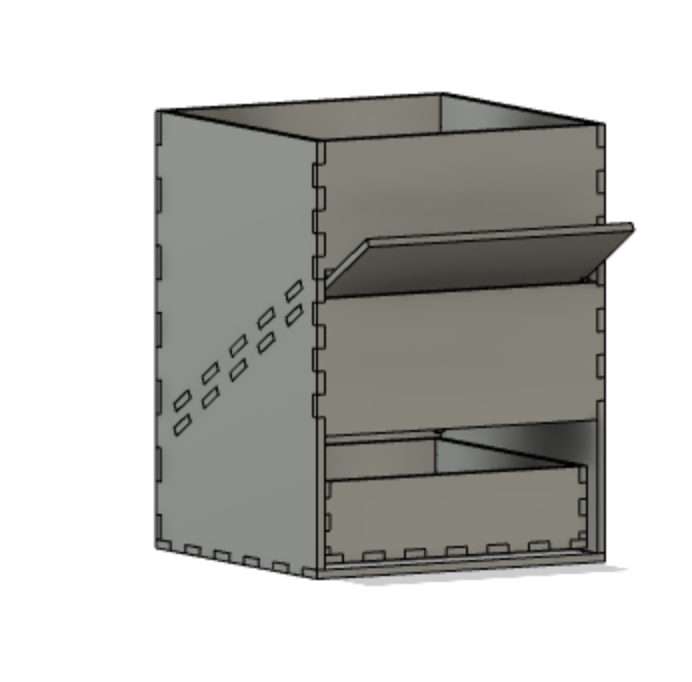
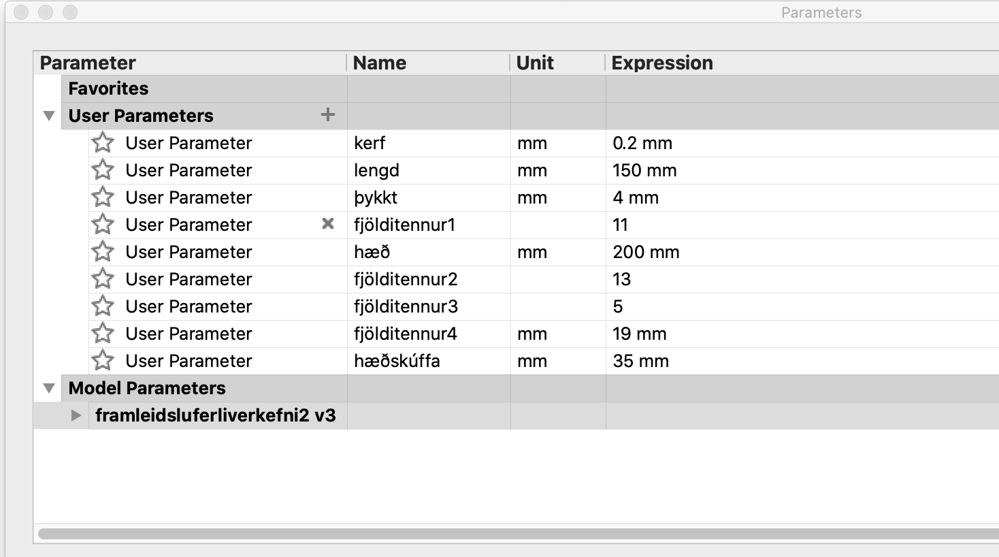
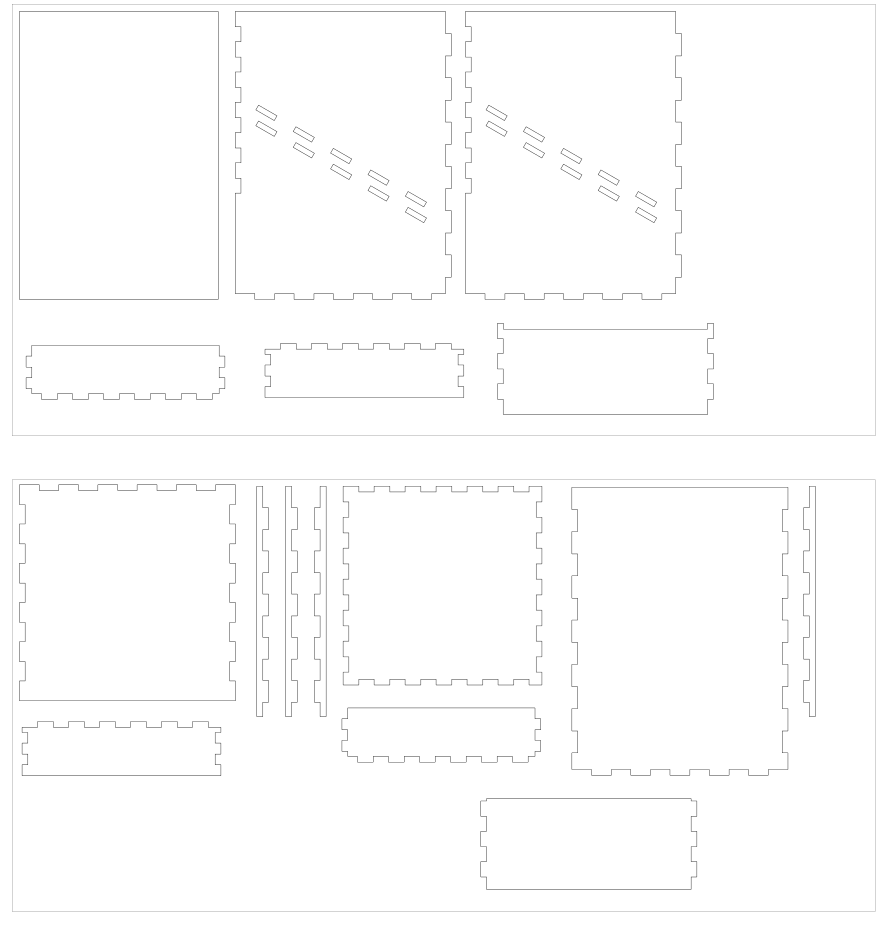

Press Fit | Laser Cutting

The Project
This project was to design and manufacture a prototype of a laser cut press fit set without any type of adhesive. The design was to be designed with the help of fixed parameters so that it could easily be altered.My Idea
I have a cat named Lísa, and I really wanted to do something to make her eating process more effective. Thus I desided to design a simple cat feeder.
The Process
I had a pretty clear idea of what I would like to draw so I went straight to Fusion 360 and started sketching my design with a help of a video the teacher pointed out. I will not go through the drawing process of the feeder in this article, as that would be very lengthy. The final design can be seen on this photo below.
I began by putting in user parameters in Fusion 360, such as the height and with of the box. Every dimension of the feeder is a function of these parameters.
I intended to put the kerf into the drawing by hand, but opted not to after careful consideration (because it seemed more work than necessary), and followed instructions in this video to do so once the CAD was ready. This video also took me step by step through the process of making a DXF file from my design. Once I had followed all of the steps in said video, I turned to inkscape with my DXF file and processed it (combining lines and nodes and laying the forms side by side) until I was happy.
